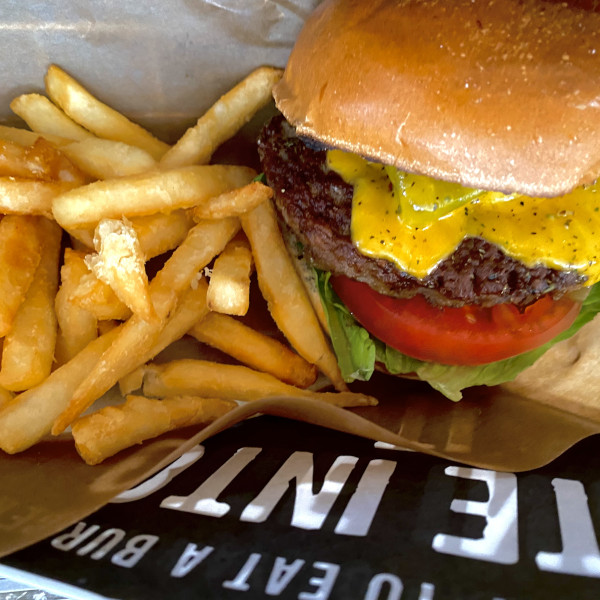

J.S.BUGERS CAFE チーズバーガー
JR新宿駅東南口あら徒歩5分ほどにある「J.S.BUGERS CAFE」さんのチーズバーガー。広いテラスのある店内で、大きなトッピングを挟んだボリューム満点のハンバーガーが食べられます。晴れた日にテラス席で食べるとよりおいしいので良かったです!一人でも誰とでも気軽に楽しめるのでオススメです。
JR新宿駅東南口あら徒歩5分ほどにある「J.S.BUGERS CAFE」さんのチーズバーガー。広いテラスのある店内で、大きなトッピングを挟んだボリューム満点のハンバーガーが食べられます。晴れた日にテラス席で食べるとよりおいしいので良かったです!一人でも誰とでも気軽に楽しめるのでオススメです。
西武新宿駅から徒歩３分ほどの場所にあるラーメン屋「駄目な隣人」さんの黒毛和牛せいろ蒸しご飯。生卵が食べ放題なので、黄身をのせて食べるのがおすすめです。スープ、麺、具材1つ1つがこだわっている特製ラーメンとの組み合わせが最高です。おしゃれな店内で１人でも女性でも行きやすいのでオススメです。
JR新宿駅東口から徒歩８分ほどにある王ろじさんのとん丼（カツカレー）です。大正１０年に創業した、とんかつ発祥のお店だそうです。見た目も味も最高です。おいしいので近くに行ったときは是非食べてみて下さい。